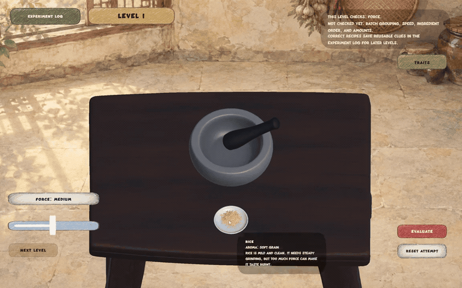
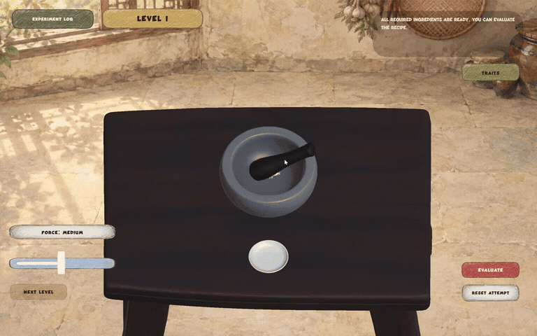
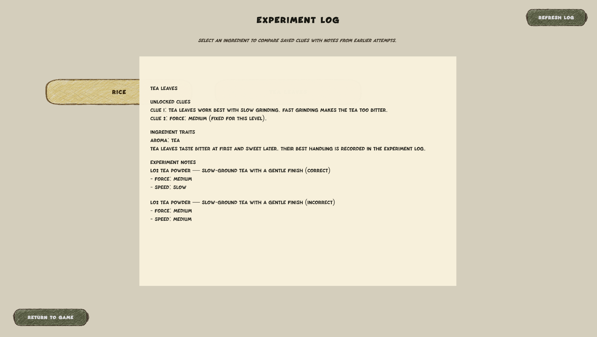
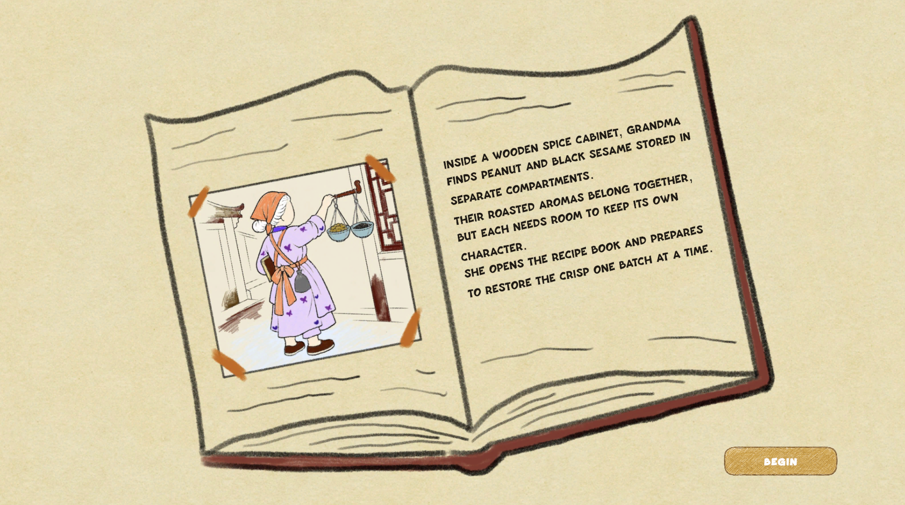

Batch 01批次 01
Douchi + Ginger豆豉 + 姜
Processed together共同处理
Rediscover forgotten recipes through trial and error. 通过尝试，还原被遗忘的配方。
A 3D Recipe Puzzle Game一款 3D 配方解谜游戏
A storybook journey following Grandma in search of childhood memories. Recover forgotten recipes through hands-on experiments and clues from earlier discoveries. 一本故事书，跟随奶奶寻找童年记忆。在亲手实验与线索推理中，还原被遗忘的配方。
Players reconstruct recipes by choosing ingredient amounts, arranging the order of addition, deciding which ingredients to process together, and setting the grinding force. Moving the pestle with the mouse controls the grinding speed.玩家通过选择食材用量、安排加入顺序、决定哪些食材同批处理，以及设置研磨力度来还原配方，并通过鼠标移动研磨杵控制研磨速度。
Each level evaluates a specific set of these variables. Players use ingredient traits, experiment feedback, and earlier Experiment Log entries to work out the preparation method and refine their next attempt.每关考察其中指定的操作维度。玩家结合食材特性、实验反馈与实验日志中的旧记录，推导制作方法，并调整下一次尝试。
While studying in the United States, I missed the food of home, especially meals made by my family. Some foods I grew up with are now rarely made.在美国留学时，我很想念家乡的食物，尤其是家里人做的饭。有些小时候常吃的食物，如今已经很少有人会做。
I wanted to turn the process of finding familiar recipes and recovering their methods into a game, sharing the longing for family and home that a remembered flavor can hold.我想把寻找熟悉配方、逐步还原做法的过程做成游戏，让玩家在找回一道道味道的过程中，感受到对家人与家乡的思念。
The game centers on a wooden workbench. Players drag ingredients into the mortar, choose amounts and force, and move the pestle with the mouse to control grinding speed.游戏围绕一张木质工作台展开。玩家拖放食材、选择用量与力度，并通过鼠标移动研磨杵控制速度。
Each level identifies the variables it evaluates. Players read the level requirements and ingredient traits, experiment, then adjust their actions using feedback and earlier records.每关会说明当前考察的维度。玩家先阅读关卡要求与食材特性，再进行实验，根据实时反馈和评价调整操作，并将已有记录用于后续配方。
| Dimension维度 | What it determines决定什么 | Player action玩家如何操作 |
|---|---|---|
| Force力度 | How strongly a batch is ground.每一批研磨时施加的力度。 | Set the pressure slider to Light, Medium, or Heavy.通过力度滑条选择轻、中、重。 |
| Speed速度 | How quickly the pestle moves.石杵移动的快慢。 | Move the mouse at a Slow, Medium, or Fast pace.通过鼠标移动控制慢、中、快三档节奏。 |
| Order加入顺序 | Which ingredient enters the mortar first.哪种食材先进入研钵。 | Drag ingredients into the mortar in sequence.按顺序将食材拖入研钵。 |
| Batch Grouping研磨批次 | Which ingredients are processed together or separately.哪些食材共同处理，哪些分开处理。 | Press New Batch to begin a separate processing group.按 New Batch 开始新的处理批次。 |
| Proportion比例 | How much of each ingredient is used.每种食材的用量。 | Choose an amount for each ingredient. For example, four-ingredient recipes use four tiers: Very Small, Small, Medium, and Large.选择每种食材的用量档位。例如，四种食材对应四档：极少、少、中、多。 |
Order determines what goes in first; grouping determines what is processed together. In L12, Douchi and Ginger share a batch, while Scallion Stem and Coarse Salt are processed separately. New Batch starts a new group.顺序决定先放什么，分批决定哪些食材一起处理。例如，L12 中豆豉与姜同批，葱茎和粗盐分别处理，New Batch 用于开始新的批次。
Batch 01批次 01
Processed together共同处理
Batch 02批次 02
Processed separately单独处理
Batch 03批次 03
A separate final batch独立的最后一批
Grinding gives players a direct way to work with ingredients and explore how they combine. Moving the pestle makes recipe experiments a physical interaction with the food.研磨让玩家能直接处理食材、探索它们的组合。通过亲手移动研磨杵，配方实验成为一种可以操作和感受的过程。
The first level begins with exploration: players can expand Ingredient Traits, hover over ingredients for introductions, and try the force slider before following the instructions to complete the force tutorial.第一关先让玩家探索操作台：展开 Ingredient Traits 阅读完整特性、悬停查看食材简介，并尝试拖动力度条，再根据指引完成力度教学。
The first six levels gradually introduce the five variables: L01 teaches force, L02 speed, L03 order, L04–L05 batch grouping, and L06 proportion alongside force. Grouping progresses from processing ingredients separately to choosing which ingredients share a batch. Later recipes combine different variables according to their requirements.前六关逐步引入五个操作维度：L01 教力度、L02 教速度、L03 教顺序、L04–L05 教分批与灵活分组，L06 引入比例并结合力度考察。分批教学从分别处理食材，推进到选择哪些食材同批。后续关卡再按配方需求组合不同维度。
An Experiment Log Practice level asks players to retrieve earlier clues, preparing them to reason from their records. L12 then brings earlier discoveries together in one recipe.日志练习关要求玩家主动找回已有线索，帮助他们从跟随指引过渡到利用记录推理。到了 L12，玩家需要综合之前的发现完成配方。
Aroma descriptions provide immediate clues during grinding: a burnt smell indicates excessive force, while little aroma indicates insufficient force. Players can compare these cues with their current setting to decide what to change.研磨时的气味描述提供即时线索：焦味表示力度过重，香味尚未散发表示力度不足。玩家可以结合当前档位，判断下一次应如何调整。
After an experiment, the Hint Panel gives a Correct, Close, or Wrong result and guides players toward an unresolved variable. Guidance stays on that problem until it is solved, so players can focus on one adjustment at a time.实验结束后，Hint Panel 给出 Correct、Close 或 Wrong 的评价，并引导玩家处理尚未解决的维度。提示会停留在当前问题上，解决后再继续，避免玩家同时猜测多个未知条件。
The Experiment Log saves attempts. In levels with clue rewards, a fully correct recipe also unlocks ingredient clues. Clues and attempt records appear in separate sections for later reference.Experiment Log 保存尝试记录；在设有线索奖励的关卡中，整道配方完全正确后，还会解锁食材线索。线索与实验记录分栏显示，方便玩家在后续关卡回查。



Unrestricted choices produce many combinations. With four ingredients and fixed proportions, allowing every order, batch grouping, and independent force and speed settings per batch yields 216,000 theoretical configurations. I used this model to decide how to constrain each level.完全开放所有操作会产生大量组合。以四种食材、固定比例为例，如果允许任意顺序、分批，以及每批独立选择力度与速度，理论上共有 216,000 种配置。我用这个模型评估复杂度，并决定各关卡的开放范围。
I narrow this space by limiting the variables evaluated in each level, providing real-time feedback, and letting players reuse earlier clues. The table illustrates how force feedback alone could reduce configurations if it narrowed every batch to two or one force choices.我通过限定每关考察的维度、提供实时反馈，以及让玩家复用已有线索，缩小需要考虑的范围。下表展示理论模型中，若力度反馈让每批剩余两档或一档力度选择，组合数会如何减少。
| Information available for each batch每批获得的信息 | Force choices left剩余力度 | Force × speed per batch每批力度 × 速度组合 | Total configurations总操作组合 |
|---|---|---|---|
| No force choice excluded尚未排除力度档位 | 3 | 3 × 3 = 9 | 216,000 |
| Heavy produces a burnt smell, or Light produces little aroma重档出现焦味，或轻档香味未散发 | 2 | 2 × 3 = 6 | 49,392 |
| Medium produces a burnt smell or little aroma中档出现焦味或香味未散发 | 1 | 1 × 3 = 3 | 4,608 |
| Dimension维度 | Choices可选方式 | Count数量 |
|---|---|---|
| Force力度 | Light / Medium / Heavy | 3 per batch每批 3 种 |
| Speed速度 | Slow / Medium / Fast | 3 per batch; 9 force–speed pairs每批 3 种；力度与速度共 9 种搭配 |
| Order食材顺序 | Arrange all four ingredients.四种食材全部排列。 | 4! = 24 |
| Batch grouping研磨分批 | For a fixed order, split or join at each of three gaps. This includes one batch of four, two pairs, a group of three plus one, and four separate batches.固定顺序后，三个间隔各自选择分开或合并；包含四种一起、两两一批、三种一批加一种单独处理，以及全部单独处理等方式。 | 2³ = 8 per order每个顺序 2³ = 8 种 |
| Batches批次数 | Calculation计算方式 | Configurations操作配置数 |
|---|---|---|
| 1 | 24 × 1 × 9 | 216 |
| 2 | 24 × 3 × 9² | 5,832 |
| 3 | 24 × 3 × 9³ | 52,488 |
| 4 | 24 × 1 × 9⁴ | 157,464 |
| Total总计 | 216 + 5,832 + 52,488 + 157,464 | 216,000 |
For each of 24 ingredient orders, the three gaps give 1, 3, 3, and 1 ways to form one to four batches. With q force–speed choices per batch, the total is 24 × (q + 3q² + 3q³ + q⁴). The comparison uses q = 9, 6, and 3, assuming equal information for every batch.四种食材有 24 种顺序；固定顺序后，分成一至四批分别有 1、3、3、1 种方式。每批剩余 q 种力度与速度组合时，总数为 24 ×（q＋3q²＋3q³＋q⁴）。对比表分别取 q＝9、6、3，并假设每批获得同等程度的力度信息。
I wanted to show how ingredient combinations can affect preparation. In L08, dried tangerine peel is ground on its own with Medium force and Fast speed. In L10, it is processed with other ingredients in a recipe using Heavy force and Slow speed. Players use the ingredient combination and recipe requirements to determine the settings.我希望表现食材组合对处理方式的影响。L08 中，陈皮单独研磨，使用 Medium 力度与 Fast 速度；L10 中，陈皮与其他食材共同处理，整份配方使用 Heavy 力度与 Slow 速度。玩家根据食材组合与当前配方的要求，判断合适的处理方式。
Players combine records from L07, L10, and L11 to determine the recipe. L12 adds no new ingredient clues, but still provides evaluation and adjustment feedback.玩家结合 L07、L10 和 L11 的记录推导配方。L12 不新增食材线索，但仍提供评价与调整反馈。
Early versions changed batches implicitly as players removed powder and added new ingredients. I added New Batch to make the boundary between batches an explicit action.早期版本没有 New Batch 按钮，玩家通过移出粉末、加入新食材切换批次，批次边界不够清楚。我加入按钮，让开始新一批成为明确的操作。
Playtesters initially guessed rather than consulted their records. I added a dedicated log practice level; in later playtests, players were more willing to use their records to guide decisions.试玩者起初倾向于直接猜答案，很少主动查看记录。我增加了专门的日志练习关，帮助他们学会回查线索；后续试玩中，他们更愿意利用记录辅助判断。
Early aroma descriptions were difficult to interpret and could not support reasoning about every variable. I separated ingredient traits, current feedback, and historical records across panels. Hints focus on the first unresolved variable and become more specific after unsuccessful attempts.早期气味描述难以理解，也不足以支持其他维度的推理。我将食材特性、当前反馈与历史记录分到不同面板，并让提示优先针对第一个未解决的维度，在尝试失败后逐步提供更明确的帮助。
I enumerated batch groupings in handwritten notes to check for omissions and assess the number of choices. When feedback did not support the next adjustment, I reviewed these cases, grouped similar situations, and created reusable templates filled with the relevant ingredient names.我用手写笔记枚举分批情况，检查遗漏和选择数量。发现提示不足以支持下一步判断时，就回查这些组合，将相似情况分类，再填入对应食材名称，形成可复用的提示模板。
Early interaction had model clipping, unnatural motion, and speed that was difficult to control consistently. I adjusted the interaction area and speed detection ranges so players could more easily express the intended action, keeping the challenge focused on understanding recipes.早期操作存在穿模、运动不自然，以及速度难以稳定控制的问题。我调整操作区域与速度识别区间，让玩家更容易表达想要的操作，将挑战集中在配方理解上。
I chose a grandmother as the protagonist so players might think of someone in their own family.我选择奶奶作为主人公，希望玩家能从她身上想到自己的家人。
Recipe levels use a first-person perspective to let players participate in her search. Story scenes show her journey from outside, like a grandchild accompanying a loved one in search of familiar flavors.配方关卡采用第一人称，让玩家亲手参与寻味；故事画面则从外部呈现她的旅程，像是孙辈跟随一位亲人寻找熟悉的味道。
I illustrated the story in a picture-book style. Introductory scenes bring the city, ingredients, and upcoming recipe together, connecting the journey with the puzzles.故事美术由我绘制，采用绘本风格。城市、食材与下一关的配方会出现在同一幅引导画面中，把旅程和解谜连接起来。

I made this project independently in Unity 6 with URP over four months, covering gameplay, levels, programming, hints, the Experiment Log, UI, and story illustrations. I generated 3D assets including ingredients, bowls, and the table with Hyper3D and integrated them into the interactive scene.项目由我独立制作，使用 Unity 6 与 URP，历时四个月。我负责玩法、关卡、程序、提示系统、实验日志、UI 与故事绘图；食材、碗和桌子等 3D 模型使用 Hyper3D 生成后整合进可交互场景。
The game contains twelve main levels, one log practice level, and fifteen primary ingredients.游戏包含十二个正式关卡、一个日志练习关和十五种主要食材。
Future development will focus on connecting city stories with recipe puzzles and building a larger puzzle across the journey. Expanding the log to preserve hidden discoveries would support exploration beyond the main recipes.后续开发将围绕城市故事与配方谜题的衔接，设计贯穿旅程的解谜内容，并扩展实验日志，让它保存隐藏发现，支持主线之外的探索。